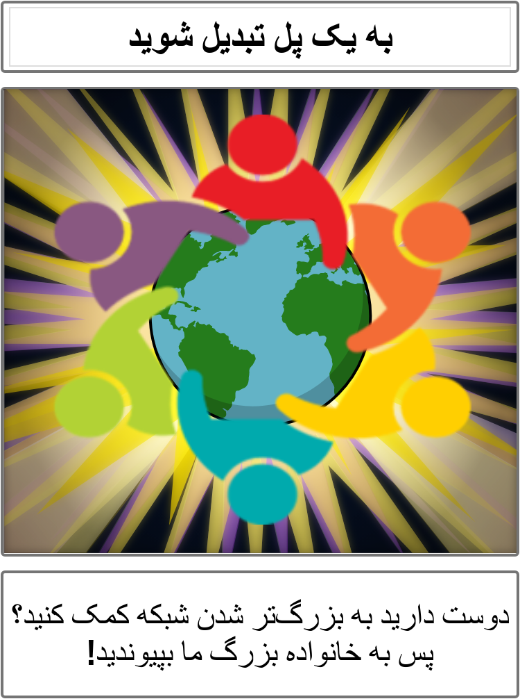
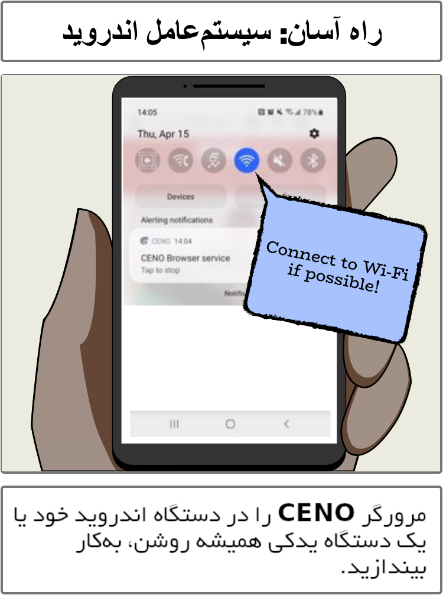
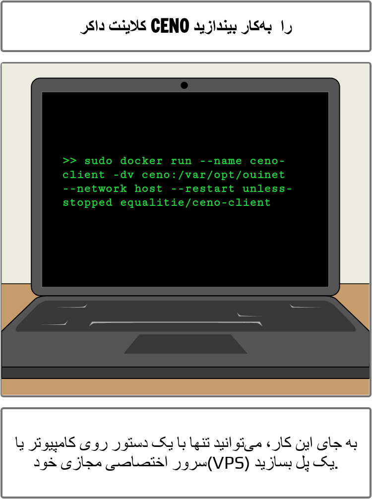
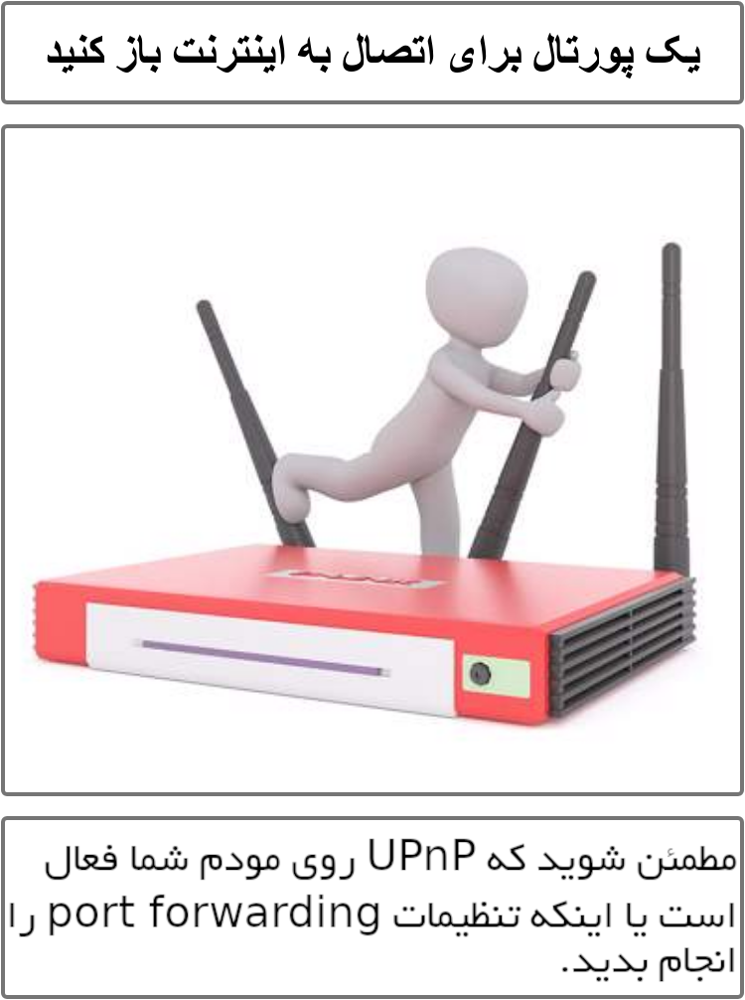
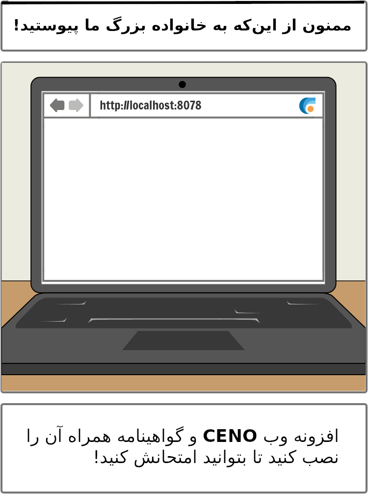

Get Involved!
ما به حمایت شما برای ایجاد مفیدترین و در دسترسترین حالت مرورگر CENO نیاز داریم.
یک گره «پل» مانند اجرا کنید






برای کسب اطلاعات بیشتر در مورد راه اندازی «پل» ، لطفا کتابچه راهنمای کاربر را مطالعه کنید.
ترجمهها
به پروژه ترجمه اپلیکیشن مرورگر CENO، افزونه وب، راهنمای کاربر و وبسایت کمک کنید!
برای شروع:
- یک حساب کاربری درWeblate وبلیت ایجاد کنید یا با شناسه Github یا Gitlab وارد شوید. توجه: ایجاد حساب الزامی نیست اما اگر حساب نداشته باشید فقط میتوانید ترجمهای را پیشنهاد دهید.
- از صفحه پروژه نه به سانسور بازدید کنید که تمام اجزا و بخشهای آنها را شامل میشود (از جمله بخشهای برنامه اندروید، افزونهی مرورگر وب، کتابچه راهنمای کاربر و وب سایت).
- در زبانه 'Languages' در صفحه نه به سانسور، زبانی را که میخواهید روی آن کار کنید انتخاب کنید ، یا - در صورتی که این زبان هنوز وجود ندارد - با انتخاب یک component از صفحه اصلی پروژه و کلیک روی آن، زبان جدیدی را ایجاد کنید و دکمه "شروع یک ترجمه جدید" را لمس کنید.
اگر می خواهید ویرایشگر ترجمهها در زبانهای خود شوید، از طریق فرم تماس زیر با تیم CENO تماس بگیرید.
برای کسب اطلاعات بیشتر در مورد نحوه استفاده از Weblate ، به اسناد و مدارک مرتبط با آن مراجعه کنید.
کد منبع
CENO کاملاً رایگان، آزاد و نرم افزاری متنباز است. اگر به دسترسی به کد منبع آن علاقه دارید، لطفاً مستندات Git زیر را بررسی کنید:
- اجزای مرورگر: ایجادکننده بسته، فایرفاکس fork، افزونههای شامل شده، منبع تنظیمات افزونهها
- منبع Ouinet
همچنین ممکن است به Freenet ساخته شده علاقهمند باشید. دیگر منابع غیر فعال مربوط به پروژه را می توانید در بایگانی بخش «نه به سانسور» بیابید.